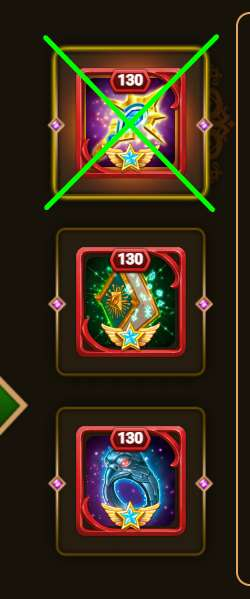
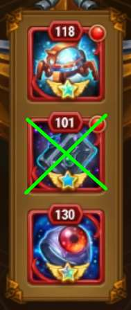
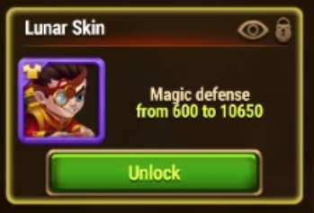

🍕 5 Biggest Mistakes in OSH team 🍕
| Let's see them together |
|---|
|
Mistake 1: Cornelius Weapon Artifact
Cornelius' first artifact with its activation

provides magic defense to the entire team. This prevents ISAAC from charging his ultimate. The time needed to perform the attack sequence is greatly reduced. Consequently, the chances of success are also greatly reduced. |
|
Mistake 2: Isaac's first artifact
isaac's first artifact should have accurate values.
This artifact provides armor penetration to the entire team This artifact needs to receive magic attacks to be charged. Magic attacks come from osh spheres. if armor penetration is too high or at the wrong level, Other heroes, such as Cornelius, will not be able to do the right amount of damage to OSH. in May 2025 the optimal value for this artifact is 114 . Increasing it beyond this level can make things worse. However up to level 118-120 in many cases it does not cause problems. 
|
|
Mistake 3: Isaac Spring Skin
ISAAC's spring skin increases ISAAC's armor penetration.
This is a disadvantage because it increases the risk of destroying his recharge spheres early. It is even worse than the first artifact Since it does not offer any stats to other heroes. 
|
|
Mistake 4: Isaac's second artifact
isaac's second artifact increases physical attack and armor penetration.

the increase in attack damage could also be positive, but armor penetration is highly harmful for the reasons explained in the previous points. |
|
Mistake 5: Isaac's Lunar Skin
Isaac's lunar skin increases the hero's magic defense.

In many cases it can still be within tolerable values. I still advise against upgrading it. Magic damage is used by Isaac to charge up if uou have any question
please ask help to your best OSH guildmate 🤓 |